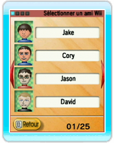
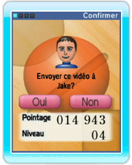
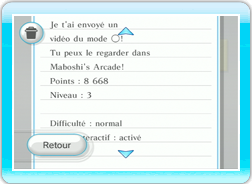
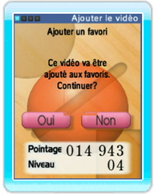

15 |
Envoyer et recevoir des vidéos |
 |
● Envoyer un vidéo 
Sélectionnez Vidéos dans le menu principal, choisissez le vidéo que vous voulez envoyer et sélectionnez Envoyer. 
Sélectionnez l’ami Wii à qui vous voulez envoyer le vidéo. 
Sélectionnez Oui à l’écran de confirmation pour envoyer le vidéo à l’ami sélectionné. NOTE: Vous devez vous enregistrer réciproquement comme amis Wii pour pouvoir vous envoyer des vidéos. Le nombre de vidéos que vous pouvez envoyer lors d’une session est limité. Si vous ne pouvez plus envoyer de vidéos, réessayez lors d’une prochaine partie. ● Recevoir un vidéo Quand vous recevez un vidéo Maboshi’s Arcade d’un ami Wii, un message vous en informe sur votre Bureau Wii. Démarrez le jeu pour regarder le vidéo. ● Sauvegarder un vidéo reçu 
Les 20 premiers vidéos reçus sont automatiquement sauvegardés. Si vous en recevez davantage,
le vidéo le plus ancien sera effacé pour libérer de l’espace.
Vous ne pouvez sauvegarder qu’un seul vidéo par ami Wii pour chaque mode.
Si vous recevez un nouveau vidéo du même ami Wii pour le même mode, le vidéo précédent sera écrasé.
Pour conserver un vidéo, ajoutez-le aux favoris (voir section |
 |
 |
 |